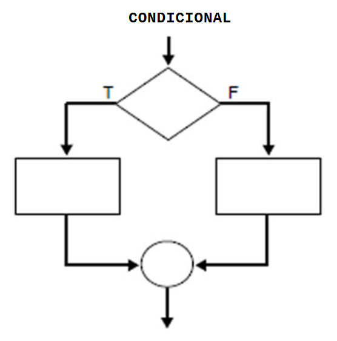

Estructures de Control en Python
Execució Seqüencial
L'execució seqüencial és el comportament per defecte en un programa Python, on les instruccions es processen en l'ordre en què apareixen al codi. En altres paraules, les línies de codi s'executen de dalt a baix, una per una, sense saltar-se cap instrucció.
Exemple d'Execució Seqüencial
Quan s'executa un programa, el flux de control segueix una seqüència lineal. Aquí tens un exemple senzill:
# Programa d'exemple per a execució seqüencial
nombre = "Maria"
edat = 25
print("Hola, el meu nom és", nombre)
print("Tinc", edat, "anys.")

En aquest exemple, el programa executa primer la línia on es defineix el nom, després imprimeix el nom, i finalment imprimeix l'edat. No hi ha condicions ni bucles, per tant, cada instrucció es fa de manera seqüencial.
Fluxe de Control
En l'execució seqüencial, el flux de control sempre segueix el codi de dalt a baix. No hi ha salts de línia ni condicions que puguin alterar aquest ordre.
Això és el que fa que el programa sigui molt senzill de comprendre i mantenir en comparació amb programes més complexos que utilitzen altres estructures de control com condicions, bucles o funcions.
L'execució seqüencial és la forma més bàsica d'execució en un programa. Cada línia s'executa una darrere de l'altra. Encara que aquest tipus d'execució és útil per a programes senzills, la majoria de programes utilitzen estructures de control com if, for, while, etc., per gestionar fluxos de control més complexos.

Execució Condicional (if, elif, else)
Les estructures condicionals permeten executar blocs de codi segons les condicions que s'hi especifiquen.
El operador : marca l'inici d'un bloc de codi estructurat i indentat, i és essencial perquè Python interpreti correctament la jerarquia del programa.
La indentació s'indica amb 4 espais (mínim) o un tabulador. Aquest principi és fonamental en Python, ja que defineix l'estructura del programa, a diferència d'altres llenguatges que utilitzen claus {}.
Exemple d'ús del condicional if - else
edat = int(input('Quina edat tens ? '))
if edat >= 18:
print("Eres major d'edat") # aquesta ordre està indentada
print("==================") # aquestes ordres formen un bloc
else:
print("Eres menor d'edat") # aquesta ordre també està indentada Exemple d'ús del condicional if amb elif i else
n = float(input("Quina nota has tret en l'examen?"))
if n<=4:
print ("Suspes")
elif n<=6:
print("Aprovat")
elif n<=8:
print("Notable")
else:
print("Excelent") Condicional en una sola línia
Si la estructura només té una línia, no és necessari indentat, tot i que és habitual fer-ho així:
if edat >= 18: print("Eres major d'edat") Guia de Estils de Python (PEP 8)
El moment de definir l'indentació és una bona ocasió per parlar de les guies d'estil oficials per al codi Python. El document PEP 8 (Python Enhancement Proposals) estableix les millors pràctiques per tal de fer el codi més llegible, consistent i mantenible.
Principals Regles de PEP 8
- Indentació: Utilitzar 4 espais per nivell d'indentació (no tabulacions).
- Línies de codi: Màxim 79 caràcters per línia.
- Espais en blanc:
- Un espai abans i després dels operadors (a = b + c).
- No espais dins dels parèntesis (func(a, b)).
- Noms de variables i funcions:
- Variables i funcions: snake_case (exemple: mi_variable).
- Classes: camelCase (exemple: miClasse).
- Importacions:
- Cada importació en una línia (import os).
- Primer les llibreries estàndard, després les de tercers i al final les del projecte.
- Comentaris: Han de ser clars i concisos, preferiblement en anglès.
Condicional Ternari en Python
El condicional ternari en Python és una manera simplificada d'escriure una estructura condicional if-else en una sola línia.
Sintaxi:
valor_si_veritable if condició else valor_si_falsAquesta estructura permet assignar un valor a una variable segons una condició en una sola línia de codi, evitant així la necessitat de tenir un bloc de codi amb múltiples línies.
Exemple:
edad = 20 # Exemple d'edat
missatge = "Major d'edat" if edad >= 18 else "Menor d'edat"
print(missatge) # Eixida: Major d'edat - Si l'edat (
edad) és 18 o més, la variablemissatgerep el valor"Major d'edat". - Si l'edat és menor a 18, la variable
missatgerep el valor"Menor d'edat".
També es pot posar dins del print
print ( "Major" if edat>18 else "Menor")match-case
Des de Python 3.10 està disponible la instrucció match-case, una estructura pareguda al switch
value = int(input("Dona'm un valor sencer: "))
match value:
case 1:
print ( "Uno" )
case 2:
print ( "Dos" )
case 3:
print ( "Tres" )
case _:
print ( "Otro valor" )
case _: funciona com default
value = int(input("Dona'm un valor sencer: "))
match value:
case 1 | 2:
print ( "Uno o Dos" )
case 3:
print ( "Tres" )
case _:
print ( "Otro valor mayor que 3" ) En un case es poden posar més d'un valor, separant amb |

Bucles (for, while) en Python
Els bucles són una estructura essencial en la programació que permet repetir un conjunt d'operacions múltiples vegades.
1. Bucles for
El bucle for itera sobre una secuència (com una llista o un rang). Aquí tens alguns exemples:
Exemple 1: Iteració amb range
La funció range és una eina molt útil a Python per generar una seqüència d'elements. Aquesta seqüència es pot utilitzar en
estructures de control de flux com el bucle for per realitzar iteracions de manera eficient.
for i in range(5): # Des de 0 fins a 4
print(i)Exemple 2: Iteració amb range amb límits específics
for i in range(2, 5): # Des de 2 fins a 4 ü§îRecorda al rebanat !!
print(i)Exemple 3: Iteració amb un pas definit
for i in range(2, 10, 2): # Des de 2 fins a 8 amb pas 2
print(i)Exemple 4: Iteració cap enrere
for i in range(12, 7, -1): # Des de 12 fins a 8 amb compte enrere
print(i)Exemple 5: Iteració sobre una cadena (string)
for lletra in "Python":
print(lletra)
Exemple 6: Iteració sobre una llista
colla = ["Pikachu", "Charizard", "Bulbasaur"] # Açò és una llista, que es vorà més endavant
for i in colla:
print(i)Paraules clau dins d'un bucle for:
break: surt del bucle prematurament.continue: salta la iteració actual i continua amb la següent.else: s'executa si el bucle no termina amb unbreak.
2. Bucles while
El bucle while executa una acció (bloc de codi) mentre una condició siga certa (True).
while condicio:
# codi que es repeteix
# poden ser una o més línies
# No pot quedarse buit (sense codi)
- Com funciona
- S'evalua la condició: una expressió que retorna True o False
- Si és True, el codi del bucle s’executa
- Quan s'acaba el codi del bucle, es torna a comprovar la condició (salt al while)
Exemple: Bucles while
contador = 0
while contador < 5:
print(f"Contador: {contador}")
contador += 1 # Augmenta el contador
print(f"El contador després d'acabar el while val: {contador}") - Resum:
whilerepeteix codi metre lacondiciosigaTrue- S'ha de vigilar de no crear bucles infinits (incrementar comptador, introduir valors nous cada iteració, etc...)
- És útil quan no se sap quantes repeticions faran falta (a diferència de
for)
Els bucles for i while són molt útils per repetir accions múltiples vegades i controlar el flux de l'execució dels programes en funció de condicions específiques.
Clàusula else en bucles en Python
Aquesta tècnica de fer servir else després d’un bucle while o for en Python s’anomena:
▶️ Clàusula else en bucles (Loop else clause)
Descripció:
És una característica pròpia de Python (i poc comuna en altres llenguatges) que permet executar un bloc de codi quan el bucle s'acaba sense un break.
Es pot aplicar a:
while+elsefor+else
Per què és útil?
Permet distingir entre:
- Casos on s’ha recorregut tot el bucle sense trobar res especial
- Casos on s’ha interromput amb
break
Exemple típic:
for numero in [1, 3, 5, 7]:
if numero % 2 == 0:
print("Té un nombre parell")
break
else:
print("Cap nombre parell trobat")üîπ Resultat: Si no es troba cap parell, s‚Äôexecuta l‚Äôelse.
Salts en Python
En Python es poden fer salts en el flux d'execució, però d'una manera limitada i controlada. Python no té una instrucció goto, com altres llenguatges antics (C, BASIC...), però pots modificar el flux amb altres estructures.
üîÄ Maneres de fer "salts" en Python
1. break
Surt d’un bucle (for o while) immediatament.
for i in range(10):
if i == 5:
break
print(i)
# Resultat: 0, 1, 2, 3, 4
2. continue
Salta a la següent iteració del bucle, sense executar la resta del codi de dins.
for i in range(5):
if i == 2:
continue
print(i)
# Resultat: 0, 1, 3, 4
3. return
Surt immediatament d’una funció i pot retornar un valor.
def verifica(x):
if x < 0:
return "Negatiu"
return "Positiu o zero"
4. raise
Fa un "salt" provocant una excepció: trenca l'execució normal.
def dividir(x, y):
if y == 0:
raise ValueError("No es pot dividir per zero")
return x / y
üö´ No hi ha goto en Python
Python no permet goto perquè va en contra dels principis de llegibilitat i claredat que promou el llenguatge. En lloc d’això, es recomana:
- Fer servir funcions i estructures condicionals
- Organitzar el codi en blocs clars
- Evitar duplicació i repetició de lògica
✅ Alternatives recomanades
- Usa funcions per evitar repetir codi
- Usa
break/continuenomés quan té sentit i millora la claredat - Escriu codi llegible, mantenible i estructurat
Manejador de Errors / Excepcions en Python
En el següent programa, poden donar-se dos errors
a=int(input('Dame un numero: '))
print(f'La inversa de {a} es { 1/(a) }')
print(' === Fi del programa ===')
Si posem una lletra
Dame un numero: tTraceback (most recent call last):
File "c:\Users\enrique\OneDrive - Conselleria d'Educació\_PYTHON\proves\_prova.py", line 2, in
a=int(input('Dame un numero: '))
ValueError: invalid literal for int() with base 10: 't' L'última línea no s'executa si es produeix un error. Cap línia després de l'error s'executarà
Si posem un 0
Traceback (most recent call last):
File "c:\Users\enrique\OneDrive - Conselleria d'Educació\_PYTHON\proves\_prova.py", line 5, in
print(f'La operacion resulta {1/(a)}')
~^^~~
ZeroDivisionError: division by zero En Python, utilitzem les estructures try i except per capturar i gestionar els errors que poden sorgir durant l'execució d'un programa.
Exemple de Manejador d'Errors
try:
resultado = 10 / 0
except ZeroDivisionError:
print("Error: No se puede dividir entre cero.")
else:
print("La operación ha sido correcta")
finally:
print("Esta parte se ejecuta siempre")
print("Y por supuesto el programa continua después del try")try: S'intenta executar el codi dins d'aquesta secció.except: Si es produeix un error (en aquest cas, una divisió per zero), s'executa el codi dins d'aquesta secció.else: Sols si no es produeix cap error en el bloctry, s'executa el codi dins d'aquesta secció.finally: Aquesta secció s'executa sempre, independentment de si hi ha hagut un error o no.
Millora al codi incial
try:
a=int(input('Dame un numero: '))
print(f'La inversa de {a} es {1/(a) }')
except ValueError:
print('Introduce un numero, no una letra')
except ZeroDivisionError:
print('division por 0....')
except Exception
print('Otro error no previsto.')
print('===== Fin del programa ======')Estructura de Control de Flux: pass
El pass és una instrucció que es pot utilitzar com a marcador de lloc. Serveix quan cal una sintaxi vàlida però no es vol que el codi faci res en una part específica.
Exemple d'ús de pass
if condición:
pass # No hace nada, pero se puede dejar como espacio para agregar código más tardeEl manejador d'errors amb try i except és essencial per controlar excepcions i evitar que el programa es pare en cas d'errors inesperats.
El pass és útil quan necessites una sintaxi vàlida sense que el codi realitzi cap acció.
Funcions en Python
Les funcions en Python són blocs de codi que es poden reutilitzar per realitzar operacions específiques. Aquestes poden ser :
Funcions incorporades
Conversió de tipus
Python inclou diverses funcions per convertir entre diferents tipus de dades:
int(): Converteix a un enter.float(): Converteix a un número decimal (float).str(): Converteix a una cadena de text.bool(): Converteix a un valor booleà (TrueoFalse).bin(): Converteix un enter a la seva representació binària com a cadena.chr(): Converteix un codi Unicode a un caràcter.ord(): Converteix un caràcter a un codi Unicode.
Funcions útils amb variables
Algunes funcions que es poden utilitzar per obtenir informació sobre variables són:
type(x): Retorna el tipus de la variablex.id(x): Retorna l'identificador únic de l'objectex.isinstance(x, int): RetornaTruesixés una instància de la classe especificada, en aquest cas,int.globals(): Retorna un diccionari amb totes les variables globals.locals(): Retorna un diccionari amb totes les variables locals.callable(nomfunc): RetornaTruesinomfuncés una funció o un objecte que es pot cridar.
Funcions matemàtiques
Python també inclou diverses funcions per realitzar càlculs matemàtics:
abs(x): Retorna el valor absolut dex.round(x): Retorna el valor dexarrodonit a l'enter més proper.max(numeros): Retorna el valor màxim de la llista denumeros.min(numeros): Retorna el valor mínim de la llista denumeros.sum(numeros): Retorna la suma de tots els elements de la llista denumeros.divmod(a, b): Retorna una tupla amb el quocient i el residu de la divisió deaperb.
Enllaços d'interès
Per a més funcions útils de Python, consulta la documentació oficial: Funcions Built-In en Python
Funcions de Cadenes en Python
Python proporciona diverses funcions incorporades (Built-In Functions) per treballar amb cadenes de text. Aquestes funcions permeten realitzar operacions comunes com modificar el format de la cadena, cercar subcadenes, o fins i tot combinar cadenes.
Funcions comunes per treballar amb cadenes:
Us de funcions: 'pedro'.upper() v.upper() upper(v) pero… len('sdfs') v.len() str(335)
upper(): Retorna la cadena en majúscules.'pedro'.upper()→ 'PEDRO'lower(): Retorna la cadena en minúscules.'PEDRO'.lower()→ 'pedro'capitalize(): Retorna la cadena amb la primera lletra en majúscula.'pedro perez'.capitalize()→ 'Pedro perez'title(): Retorna la cadena amb la primera lletra de cada paraula en majúscula.'pedro perez'.title()→ 'Pedro Perez'strip(): Elimina els espais en blanc al principi i final de la cadena.' hola '.strip()→ 'hola'replace(old, new): Substitueix totes les aparicions de la subcadenaoldpernew.'hola'.replace('o', 'a')→ 'hala'split(separator): Divideix la cadena en una llista de subcadenes utilitzant el separador especificat.'a,b,c'.split(',')→ ['a', 'b', 'c']join(iterable): Combina els elements d'un iterable (com una llista) en una cadena, separats per la cadena actual.','.join(['a', 'b', 'c'])→ 'a,b,c'find(sub): Retorna l'índex de la primera aparició de la subcadenasub. Si no la troba, retorna -1.'hola'.find('o')→ 1index(sub): Similar afind(), però llança una excepció si no troba la subcadena.'hola'.index('o')→ 1startswith(prefix): RetornaTruesi la cadena comença amb el prefix especificat.'hola'.startswith('ho')→ Trueendswith(suffix): RetornaTruesi la cadena acaba amb el sufix especificat.'hola'.endswith('a')→ Trueisalpha(): RetornaTruesi tots els caràcters de la cadena són lletres.'hola'.isalpha()→ Trueisdigit(): RetornaTruesi tots els caràcters de la cadena són dígits.'1234'.isdigit()→ Trueisalnum(): RetornaTruesi tots els caràcters de la cadena són lletres o dígits.'abc123'.isalnum()→ Trueisspace(): RetornaTruesi tots els caràcters de la cadena són espais en blanc.' '.isspace()→ Trueformat(): Permet formatejar cadenes de text.'Hola {}'.format('món')→ 'Hola món' (similar als f-strings)count(sub): Retorna el nombre d'aparicions de la subcadenasubdins la cadena.'hola mon'.count('o')→ 2zfill(width): Omple la cadena amb zeros al principi fins a aconseguir la llargada especificada.'42'.zfill(5)→ '00042'center(width): Centra la cadena en un camp de caràcters de llargada especificada.'hola'.center(8)→ ' hola 'ljust(width): Justifica la cadena a l'esquerra en un camp de llargada especificada.'hola'.ljust(8)→ 'hola 'rjust(width): Justifica la cadena a la dreta en un camp de llargada especificada.'hola'.rjust(8)→ ' hola'
Funció eval()
eval() és una funció que permet executar una cadena de text com a codi Python. Pot ser perillosa si s'utilitza amb dades no fiables, ja que pot executar qualsevol codi Python.
Exemple d'ús:
eval('x+1')Aquesta funció interpreta i executa la cadena 'x+1', avaluant-la com a codi Python.
Funcions Definides per l'Usuari en Python
A més de les funcions incorporades en el llenguatge, Python permet la definició de funcions noves, també conegudes com a funcions definides per l'usuari.
Les funcions definides per l'usuari són blocs de codi reutilitzables que realitzen una tasca específica. Aquestes funcions es creen utilitzant la paraula clau def, seguida del nom de la funció i parèntesis que poden incloure paràmetres. El cos de la funció està indentat i pot incloure declaracions, càlculs i una declaració return per retornar un valor.
Exemple de Funció Definida per l'Usuari
# Definir funció
def saluda():
print("Hola mon")
print("Soc Python !!")
# Cridar la funció
saluda() # Esta funció no retorna cap valor, sols imprimeix
def suma(a, b):
resultat = a + b
return resultat
# Cridar la funció
resultat_suma = suma(3, 5) # Esta funció no imprimeix res, pero torna un valor
print(resultat_suma) # Eixida: 8
print ( suma (243,521) ) # Eixida 764
En aquest exemple, la funció suma(a, b) rep dos paràmetres, a i b, i retorna la seva suma.
Components d'una Funció Definida per l'Usuari:
- Paraula clau
def: S'utilitza per definir la funció. - Nom de la funció: Un nom descriptiu per a la funció, seguit de parèntesis.
- Paràmetres: Opcionalment, una funció pot rebre valors externs mitjançant paràmetres.
- : Els dos punts indiquen que comença el bloc de codi indentat
- Codi dins la funció: Blocs d'instruccions que realitzen l'operació desitjada. bloc indentat
- Declaració
return: Opcional, però retorna un valor de la funció.
La indentació fa referència a la tècnica d'afegir espais al principi de les línies de codi, el que ajuda a delimitar visualment els blocs i les estructures de control.
En Python, l'indentació és molt important ja que és la manera que utilitza el llenguatge per definir l'estructura del codi, a diferència d'altres llenguatges que utilitzen claus ({}) per identificar els blocs. Un codi sense una correcta indentació pot generar errors d'execució o de lògica.
Funcions amb Paràmetres Opcionals
def saludar(nom="Usuari"):
print(f"Hola, {nom}!")
saludar("Joan") # Eixida: Hola, Joan!
saludar() # Eixida: Hola, Usuari! Aquest exemple mostra com es poden definir paràmetres opcionals en una funció. Si no es passa cap valor a la funció, es fa servir el valor per defecte (en aquest cas, "Usuari").
Funcions amb Valor de Retorn
def multiplicar(a, b):
return a * b
resultat_multiplicacio = multiplicar(4, 3)
print(resultat_multiplicacio) # Eixida: 12 Les funcions també poden retornar un valor mitjançant la declaració return, com es veu en l'exemple de la funció multiplicar.
Una funcio pot tindre més d'una intrucció return , però sols s'executarà una, que eixirà de la funció
Funcions amb Tipus de Dades (Type Hinting)
En Python, es poden afegir indicadors de tipus (type hints) per especificar el tipus de les variables o els arguments d'una funció. Això millora la llegibilitat del codi i ajuda als editors a proporcionar suggeriments i detecció d'errors.
def dividir(a: float, b: float) -> float: # Indicació de tipus per a arguments i valor de retorn
return a / b Funcions amb múltiples arguments
En Python, es poden definir funcions que accepten un nombre variable d'arguments usant els símbols * i **:
Arguments arbitraris (Amb Comes)
def sumar_todos(*numeros): # Diversos arguments passats amb comes
return sum(numeros) En aquest exemple, la funció sumar_todos pot acceptar qualsevol nombre d'arguments, i els processa com una tupla.
# Exemple de com usar la funció resultat = sumar_todos(1, 2, 3, 4) print(resultat) # Output: 10 llista = [5, 6, 7] resultat = sumar_todos(*llista) print(resultat) # Output: 18
Arguments amb clau i valor (Clave-Valor)
def mostrar_info(**info): # Diversos arguments passats com a clau-valor
for clau, valor in info.items():
print(f"{clau}: {valor}") Aquesta funció accepta un nombre arbitrari de parells de clau-valor, com un diccionari.
# Exemple d'us
mostrar_info(nom="Anna", edat=25, ciutat="Barcelona")
dades = {"nom": "Marc", "edat": 30}
mostrar_info(**dades)
Funcions que retornen més d'un valor
def operacions(a, b):
suma = a + b
resta = a - b
producte = a * b
return suma, resta, producte
x,y,z = operacions(10,5)
resultat = operacions(10, 5)
print(resultat) # (15, 5, 50)
Funcions Lambda
Les funcions lambda són funcions anònimes que es poden definir en una sola línia. Són útils per a operacions simples i per passar com arguments a altres funcions.
multiplicar = lambda x, y: x * y # Funció lambda per multiplicar dos valors
print(multiplicar(2, 3)) # Eixida: 6 Decoradors (Següent Tema)
Els decoradors en Python són una forma de modificar o millorar el comportament d'una funció sense canviar-ne el codi. Són un tema avançat que tractarem més endavant.
Ámbit o Scope en Python
En Python, l'àmbit d'una variable es refereix a la regió del codi on una variable és accessible. Python té regles específiques per determinar on una variable es pot utilitzar o modificar. Els àmbits més comuns són:
Ámbit Local
Una variable definida dins d'una funció té un àmbit local. Només pot ser accedida dins d'aquesta funció. Si intentes accedir a una variable local fora de la seva funció, obtindràs un error.
Exemple d'àmbit local
def funcion():
y = 5 # Variable local
print(y) # Eixida: 5
funcion()
print(y) # Error: NameError, 'y' no està definida en l'àmbit global Ámbit Global
Una variable definida fora de totes les funcions o blocs de codi té un àmbit global. Pot ser accedida des de qualsevol part del codi, incloent dins de les funcions.
Però, accedir no és el mateix que modificar.....
Si necessites modificar una variable global dins d'una funció, has d'utilitzar la paraula clau global.
Exemple de variable global
x = 10 # Variable global
def mostrar_x():
print(x) # Accés a la variable global
mostrar_x() # Eixida: 10 def mostrar_x():
print(x) # Accés a la variable global
x = 10 # Variable global. No hi ha problema perquè es defineix abans de cridar a la funció
mostrar_x() # Eixida: 10 Modificació d'una variable global dins d'una funció sense global (no es pot)
x = 10
def modificar_x():
x = 20 # Crea una nova variable local, no modifica la global
print(x) # Eixida: 20
modificar_x()
print(x) # Eixida: 10 (la variable global no ha canviat) Modificació d'una variable global dins d'una funció amb global
x = 10
def modificar_x():
global x
x = 20 # Modifica la variable global
print(x) # Eixida: 20
modificar_x()
print(x) # Eixida: 20 (la variable global ha canviat) Ámbit No Local (Nonlocal)
En python es poden definir funcions , dins d'altres funcions.
L'àmbit no local aplica a variables definides en una funció externa (però no global) i que es poden accedir des d'una funció interna (anidada). Per modificar una variable d'una funció externa dins d'una funció interna, es fa servir la paraula clau nonlocal.
Exemple de variable no local
def funcion_externa():
z = 15 # Variable no local
def funcion_interna():
nonlocal z
z = 25 # Modifica la variable de la funció externa
print(z) # Eixida: 25
funcion_interna()
print(z) # Eixida: 25 (la variable no local ha canviat)
funcion_externa()
Ámbit de Bucle o Bloc
En Python, els blocs (if, for, while) NO creen un nou àmbit (scope). Només les funcions, classes i mòduls creen àmbits nous. A diferència d'altres llenguatges, en Python les variables definides en un bucle o bloc no estan limitades a aquell bloc i poden ser accedides fora d'ell.
Exemple d'àmbit de bucle
for i in range(3):
print(i) # Eixida: 0, 1, 2
x=10
print(i) # Eixida: 2 (la variable 'i' segueix accessible fora del bucle)
print(x) # Eixida: 10 Això pot resultar confús si vens d'altres llenguatges on les variables de bucle tenen un àmbit limitat al bloc.
Bones Pràctiques al Definir Funcions en Python
Quan es defineixen funcions en Python, hi ha algunes bones pràctiques que ajuden a millorar la llegibilitat, mantenibilitat i eficiència del codi:
1. Noms descriptius
El nom de la funció ha de reflectir clarament el seu propòsit. Això facilita la comprensió del codi i la seva reutilització.
2. Comentaris i documentació (Docstrings)
És important documentar les funcions per explicar què fan, quins són els paràmetres d'entrada i el valor de retorn. El millor mètode per documentar una funció és utilitzar docstrings, que es defineixen entre triple cometes (""" ... """).
Exemple de funció amb docstring
def sumar(a, b):
"""
Suma dos números y devuelve el resultado.
:param a: Primer número
:param b: Segundo número
:return: La suma de a y b
"""
return a + b A més a més, esta forma de documentar permet activar l'ajuda de la funció definida
help(sumar)
sumar(a, b)
Suma dos números y devuelve el resultado.
:param a: Primer número
:param b: Segundo número
:return: La suma de a y b
3. Evitar efectes secundaris
Una funció hauria de fer només una cosa. No hauria de modificar variables globals o tindre efectes secundaris inesperats. Això ajuda a que el comportament de la funció sigui més previsible.
4. Mantindre les funcions curtes
Les funcions han de ser petites i fàcils de llegir. Si una funció és massa llarga, es recomana dividir-la en funcions més petites per a fer-les més comprensibles i reutilitzables.
Ús del Guion Baix (_) en Python
El guion baix (_) en Python té diversos usos depenent del context en què es trobi. A continuació es mostren alguns dels usos més comuns:
1. Ignorar valors en assignacions
Es fa servir com una variable "desechable" quan no necessites utilitzar un valor en una assignació. El valor es descarta utilitzant el guion baix.
_, y, z = (1, 2, 3)
print(y, z) # Eixida: 2 32. Iteracions quan no es necessita el valor
En els bucles, es fa servir for _ in range(n) quan no necessites utilitzar la variable del bucle.
for _ in range(3):
print("Hola") # Es imprimeix "Hola" tres vegades3. Últim resultat en la consola interactiva
En la terminal de Python, _ emmagatzema l'últim resultat calculat.
>> 5 + 3
8
>>> _ * 2
164. Prefixe per a variables privades
Es fa servir _variable per indicar que una variable és "privada" (això és una convenció, no una restricció real).
class MiClasse:
def __init__(self):
self._secreta = 42 # Indica que és privada (però encara accessible)5. Doble guió baix per evitar col·lisions de noms (name mangling)
Quan una variable comença amb __, Python canvia el seu nom internament per evitar col·lisions.
class Exemple:
def __init__(self):
self.__privada = 99
e = Exemple()
print(dir(e)) # Es converteix en _Exemple__privada6. Utilitzar _ en noms de funcions i variables per evitar conflictes
Es fa servir _ en noms per evitar conflictes amb paraules clau de Python.
def class_(nom):
return f"Classe: {nom}"En Python no hi ha pas per referència, sinó pas de referències a objectes. Només els objectes mutables poden ser modificats dins d’una funció
En Python una funció es pot cridar des de dins d'una altra funció
En Python una funció es pot cridar a si mateix ( recursivitat ) i possible DoS si no es fa bé
Mòduls i Paquets en Python
Un mòdul és simplement un fitxer de Python amb extensió .py que conté definicions de funcions, classes i variables. Pots reutilitzar el codi d'un mòdul important-lo en altres arxius o programes.
Crear un fitxer Python (mi_modulo.py)
# mi_modulo.py
def saludar(nombre):
return f"Hola, {nombre}!"
PI = 3.14159Importar i utilitzar el mòdul en un altre arxiu
# programa.py
import mi_modulo
print(mi_modulo.saludar("Juan")) # Eixida: Hola, Juan!
print(mi_modulo.PI) # Eixida: 3.14159Quan hem importat un mòdul i volem utilitzar algun element del mateix, hem de fer servir el seu espai de noms seguit d'un punt i el nom de l'element que volem utilitzar. L'espai de noms no és més que el nom que hem indicat després del import.
Maneres d'importar mòduls:
Importar tot el mòdul:
import mi_modulo # L'espai de noms és => mi_modulo
print(mi_modulo.saludar("Ana")) # D'aquesta manera s'ha de fer servir l'espai de nomsImportar elements específics del mòdul: (sense espai de noms)
from mi_modulo import saludar
print(saludar("Carlos")) # D'aquesta manera NO s'ha de fer servir l'espai de nomsImportar TOTS els elements del mòdul: (sense espai de noms)
from mi_modulo import *
print(saludar("Carlos")) # D'aquesta manera NO s'ha de fer servir l'espai de nomsRenombrar un mòdul:
import mi_modulo as mm
print(mm.PI) # D'aquesta manera s'ha de fer servir l'espai de nomsPaquets en Python
Un paquet és una col·lecció de mòduls organitzats en un directori. Serveix per estructurar projectes grans en jerarquies de submòduls.
Com crear un paquet:
- Crea una carpeta per al paquet (per exemple,
mi_paquete). - Dins de la carpeta, afegeix un arxiu especial anomenat
__init__.py. Aquest arxiu pot estar buit o contenir codi d'inicialització per al paquet.
Estructura bàsica d'un paquet:
mi_paquete/
__init__.py
modulo1.py
modulo2.pyExemple de mòduls dins del paquet:
◦ modulo1.py:
def sumar(a, b):
return a + b◦ modulo2.py:
def restar(a, b):
return a - bÚs del paquet en un programa:
# programa.py
from mi_paquete.modulo1 import sumar
from mi_paquete.modulo2 import restar
print(sumar(5, 3)) # Eixida: 8
print(restar(5, 3)) # Eixida: 2Paquets anidats:
Els paquets poden contenir subpaquets. Per exemple:
mi_paquete/
__init__.py
utilidades/
__init__.py
herramientas.pyPots importar submòduls així:
from mi_paquete.utilidades.herramientas import alguna_funcionMòduls i Paquets Estàndard de Python
Python inclou molts mòduls estàndard llestos per utilitzar. Alguns exemples comuns són:
Exemples de mòduls estàndard:
• math: Funcions matemàtiques.
import math
print(math.sqrt(16)) # Eixida: 4.0• os: Operacions del sistema operatiu.
import os
print(os.getcwd()) # Obtén el directori actual.• random: Generació de números aleatoris.
import random
print(random.randint(1, 10)) # Número aleatori entre 1 i 10.Instal·lació de Paquets Externs
Per utilitzar paquets desenvolupats per tercers, els pots instal·lar des del repositori PyPI utilitzant pip:
pip3 install nom_del_paquetExemple: Instal·lar requests per realitzar sol·licituds HTTP:
import requests
response = requests.get("https://example.com")
print(response.status_code)Ús de __main__ en Python
En Python, la construcció if __name__ == "__main__": és una forma estàndard d'assegurar-se que un bloc de codi només s'executi quan el fitxer s'executa directament, i no quan s'importa com un mòdul en un altre fitxer.
Desglossament de la seva funció:
__name__: És una variable especial a Python que es defineix automàticament.- Si el fitxer s'executa directament,
__name__pren el valor de"__main__". - Si el fitxer s'importa com a mòdul,
__name__pren el nom del fitxer (sense l'extensió .py).
- Si el fitxer s'executa directament,
if __name__ == "__main__":- Aquest condicional avalua si el script està sent executat directament (no importat).
- Si la condició és verdadera, el codi dins del bloc s'executarà.
Per què és útil?
Això és especialment útil per:
- Separar el codi que ha d'executar-se només quan el fitxer és el "principal" del programa (com proves, lògica principal o execució directa).
- Permetre que el fitxer sigui importat com a mòdul sense executar automàticament el seu codi principal.
Exemple pràctic:
# Arxiu: mi_script.py
def funcion_util():
print("Aquesta funció pot ser utilitzada en altres mòduls.")
if __name__ == "__main__":
print("Aquest script s'està executant directament.")
funcion_util()Si executem mi_script.py directament:
$ python mi_script.py
Aquest script s'està executant directament.
Aquesta funció pot ser utilitzada en altres mòduls.Si importem mi_script des d'un altre fitxer:
import mi_script
mi_script.funcion_util()
Aquesta funció pot ser utilitzada en altres mòduls.El bloc dins de if __name__ == "__main__": no s'executarà perquè el fitxer no s'està executant directament.